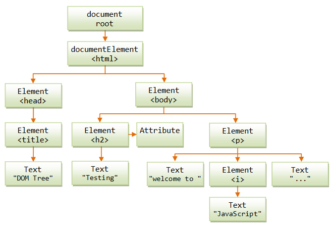

What is HTML?
HTML or Hyper Text Markup Language is the basic buidling block of any webpage. A markup language refers to a set of mark up tags, in this case HTML tags, to describe web pages. HTML documents essentially describe web pages. A webpage structure consists of HTML tags and plain text. HTML tags are easily identified as they are surrounded by angle brackets ( eg. <p> to represent paragraph or <div> to represent a division in the page ).
The web browser reads a HTML document and displays it as a web page. The browser uses the HTML tags to interpret the content of the page but does not display the tags themselves. HTML pages can embed images, objects and scripts written in languages like JavaScript. HTML can also be used to create interactive forms.
What is CSS?
CSS or Cascading Style Sheets is a language that defines how HTML elements need to be displayed in a page. As the name suggests, CSS is used to apply styling to your webpage. This includes things like font style and colour, background colour, the orientation of your images or tables.
CSS is stored as a separate file to the HTML document. This allows for multiple web pages to share the same formatting, reducing complexity and repititon.
The main difference between HTML and CSS is that HTML is a markup language used to specify the content or structure of a web page, while CSS is a style sheet language used to format or style the web page.
I like to think of HTML and CSS as a modern love story....HTML and CSS have been in a happy and functional relationship for many years. As a pair they couldn't be more different, but it is precisely these differences that make them such a compatible pair. HTML is a few years older than CSS. The two met back in the early 90's and have been inseperable ever since. Earlier this year HTML and CSS defied the odds of the housing market and bought some land. HTML drafted up the initial plans. HTML doesn't care much for frills and is really only interested in a solid structure and functionality. CSS showcased their talents when it came to the interior design and overall look of the property. The results were stunning. Both HTML and CSS are keen on self improvement, and keep their relationship fresh by constantly reinventing themselves.
If HTML is the structure and CSS is the style of a webpage, then JavaScript or JS is the functionality. In other words, JS is the programming language that is used to make a webpage dynamic and interactive. Any time a web page does more than just sit there looking pretty and displaying static information (displaying timely content updates, interactive maps, animated graphics, scrolling etc.) JavaScript probably has something to with it. To refer to our earlier love story analogy, JavaScript would be the multifaceted handy man, fititng the house with it's necessary piping and electrtical wiring.

In computer programming, the term control flow refers to the order in which the instructions in your program are executed. In JavaScript, we read the code starting from the first line through to the last line unless of course in the code there are instructions or statements that changes that control flow, which is like, 99% of the time.
We generally have instructions in our code that are repeated, or branching paths in the control flow of your program. There’s an entire category of statements that alter the control flow of your program: control flow statements.
I think of control flow like reading a book, specifically one of those Goosebumps 'choose your own adventure' books I read as a kid. You read the book from beginning to end, however there are points throughout where you can choose your next step from a number of options, and in doing so changing the outcome of the story (of course you could always read it again and select another option!!).
A common tool of control flow in JS are if/else statements. With an if/else statement, the program will execute if the condition returns true, otherwise if its false it will carry out another action. For example in our Goosebumps book we peak through the window of the dilapidated mansion to check for any obvious signs of ghosty activity(true = safe, false = ghosty AF); if it's all clear(true) we may go inside and out of the storm, if it looks suspicious(false) we may return to the dark haunted forest...OOOOOOOHHHHHH.

In JS a loop is a sequence of instructions, repeated until a certain condition is reached. The main concept behind a loop is that it repeats the task again and again in the program to reduce the time and effort. There are three types of looping statements: for, while, and do…while.
So the dark haunted forest isn't actually the best place to wait out the storm on this long dark haunted night, maybe you return to the mansion at regular intervals until the coast is clear.
The Document Object Model (DOM) is the data representation of the objects that comprise the structure and content of a document on a webpage. The contents of a webpage are represented as a logical tree structure, with branches ending in basic units of a data structure or 'nodes'.
A web page can be either displayed in the browser window or as the HTML source in the DOM. In both cases, it is the same document, however the DOM representation allows it to be manipulated. As an object-oriented representation of the web page, its structure, content and style can be modified. The DOM is crucial in tying HTML, CSS and JS together. In fact, without the DOM, JS wouldn't have any model or notion of web pages and their component parts.
You can manipulate the DOM using DevTools - a developer toolkit built in to the chrome browser. A simple CTL+SHIFT+I (or CTL+SHIFT+J to bring you straight to the JS console) will open the DOM from your browser, and from there you can manipulate your HTML and CSS, and write JS.